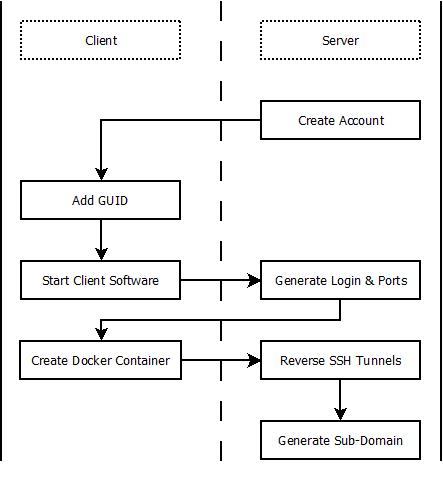

Overview
This document contains a high-level technical overview of the P2P VPS suit of software. The full suit consists of a set of server, client, and server deployment software.
The client software has two targets: Raspberry Pi minicomputers and VirtualBox VMs running Ubuntu Linux. The client software can be adapted to operate on any device that is capable of running Docker. The focus of the client software is to:
- Create a basic Linux environment with a command line interface (CLI).
- Establish a reverse SSH connection with the server, to provide the CLI to the renter.
- Establish a LocalTunnel connection to the server so the device can serve webpages, web apps, and distributed apps (dapps), accessible from the general internet.
The server software is a Vue.js-based theme for ConnextCMS. It gives Device Owners a dashboard for managing the devices they rent out on the marketplace. It also gives prospective Renters an easy way to filter VPSs by benchmarks, in order to find the best price for their desired use. It's primary functions are:
- Register incoming connections from client devices.
- Negotiate the ports used in the reverse-SSH connection.
- Create listing on the OpenBazaar network to allow Client devices to be rented.
- Establish connection with other servers.
The server deployment software is a collection of Dockerized packages, all orchestrated with Docker Compose. This software is targeted for cloud VPS hosts like Digital Ocean, Vultr, AWS EC2, etc running Ubuntu Linux. The major components consist of:
- ConnextCMS running with the server software explained above.
- A MongoDB instance for managing data.
- An OpenBazaar instance for conducting rental transactions.
- A Listing Manager that maintains the OpenBazaar store inventory and fulfills transactions.
- An SSH server for managing reverse SSH tunnel connections.
- A LocalTunnel server for managing the networking of HTTP (port 80) and HTTPS (port 443) connections.
Table of Contents #
Definitions #
- Client or Device includes IoT devices, servers, and anything in between. This term encompasses any device capable of running Docker and executing the client software
- Server is an internet connected computer capable of running the software in this repository.
- Device Owners are the owners of the Client devices.
- Renters are users who rent the Client device from the Device Owners.
A simple diagram of a P2P VPS Marketplace:

Client-Overview #
The purpose of the client side software is to create a virtual private server (VPS) environment similar to those hosted by cloud companies like Digital Ocean or AWS EC2. This is achieved on an IoT device by running a Linux shell inside a Docker container. Small, inexpensive, distributed hardware like Raspberry Pi minicomputers now posses the computational power to host such an environment.
This setup has the following advantages:
By running the environment in a virtual system like Docker, the device can be easily reset to a known state when the renter is done using it.
By using reverse SSH to connect to a central server, the renters can be provided with a command line interface to the device while by-passing network firewalls. However, this creates network risks that device owners need to be aware of.
Renting out the computing power of the hardware allows hardware owners to profit from their hardware and internet connection, while promoting a decentralized internet.
Creating distributed, semi-anonymouse VPS micro-servers, hosted in peoples homes, has empowering legal ramifications and moves the internet towards a more reliable, distributed, and censorless architecture.
The client software is composed of the following high-level features. Each feature needs a manager, so if you are interested in contributing, please let us know:
- Governor
- Docker container with SSH
- Persistent Storage
- Encryption
- Deployment Packages (pre-configured scripts for setting up apps like webservers, file sharing, etc.)
See more details in the Client section.
Server-Overview #
The primary purpose of the server software is to orchestrate the network of devices and facilitate financial transactions via OpenBazaar. Its secondary purpose is to connect with other servers, in order to establish a peer-to-peer (P2P) marketplace, with no central point of failure. These goals are achieved by splitting the server into two software stacks: The front end and the back end.
The front end of the server has to do will all the activity that takes place in a web browser. It's primarily concerned with the Vue.js applications that allow renters and owners to manage devices. It is composed of the following high-level features:
- Rental Search - searching and filtering rental devices.
- Device Management Dashboard - allowing device owners to manage their devices on the network.
The back end of the server is primarily concerned with the database and REST APIs used to coordinate the different pieces of software in the P2P VPS suite. It is composed of the following high level features:
- Database API
- Website and Content Management System (CMS)
- Port Control
Server-Deployment-Overview #
The Server Deployment repository is primarily concerned with helping people start up their own P2P VPS marketplace by easily deploying the software onto a Linux cloud server. This is accomplished by modularizing the major pieces of software into Docker containers and then orchestrating their communication with Docker Compose. It is made up of the following high level features:
- ConnextCMS
- MongoDB
- OpenBazaar
- Listing Manager
- SSH Server
- LocalTunnel
- Nginx Configuration
High-Level-Workflow #
The sections below give additional details on how the system-as-a-whole works. Lower level specifications will be captured in the respective specification document for Client, Server, and Server Deployment.
Network Orchestration
A client device registers with a server by making a REST API call and passing a server-generated key (GUID). Upon receiving a valid registration call, the server opens new ports, generates login details, and returns this information to the client. The client then launches a Docker container with a minimal Linux environment. The container makes a reverse SSH connection to forward its local SSH port to the server's new port, tunneling through any firewalls, and creating a command line interface accessible to the renter.
The Server operates a minimal SSH server running inside a Docker container and another LocalTunnel server running inside it's own Docker container. This SSH shell allows connection to the client device via SSH. The LocalTunnel server also forwards port 80 (http) and port 443 (https) from the client device. A subdomain is created on the server allowing access to these three ports. This allows renters to connect to the command line on the client device and also serve web pages and web apps from a human-readable URL.

Financial Transactions
Transactions between Owners and Renters will take place over the OpenBazaar (OB) network. This requires that the buyer and seller each have a local installation of OpenBazaar capable of sending a receiving cryptocurrency. Cryptocurrencies have the advantage of allowing server owners to create semi-anonymous markets. It also allows P2P VPS servers to facilitate trade between Owners and Renters without having any liability with regard to financial transactions.
Rental of devices will be billed by the hour. When a device is registered, its hardware (memory, CPU, hard-drive space) will be verified. Owners can then place the device for rent on the P2P VPS marketplace, or simply reserve it for personal use. The device owner can set the hourly rate they are willing to rent the device for on the marketplace.
A renter agrees to the rental contract by purchasing the contract on the OpenBazaar network for a fixed length of time. The listing for the device is then removed from the P2P VPS OpenBazaar store. A random username and password generated for the device is sent to the renter along with the receipt for the transaction, inside the OB client.
As long as the device is connected to the internet, the device will be dedicated for the renters use. Once the length of the contract expires, the client device is reset and placed back on the marketplace.
In the future, a feature will be developed to allow renters to extend the length of their contract. If the client device goes offline and can not fulfill the terms of the contract, an OpenBazaar dispute is activated and a moderator can pro-rate and refund part of the transaction to the renter. At the moment, dispute resolution is a manual process, but it will be automated in the future.
At some regular interval, typically a month, it is up to the Server owner to distribute earned money to the Device Owners. An API for the server will be provided to query all payments owed to Device Owners. Payment will be most easily facilitated if the Device Owners have OpenBazaar wallets, as that is the same wallet that Clients and the Server will use. It is up to the Server owner and Device Owners to negotiate costs and fees.
Federated Servers
Server software will be able to establish connections with other servers at the desire of the server administrator. This API will allow P2P VPS servers to link to one another. The link will appear on their website. A link to the servers OpenBazaar store will also appear on their OpenBazaar store page. By creating a federation of marketplaces, the overall network has no single point of failure. If a server goes down, Device Owners can simply move their devices to other servers.